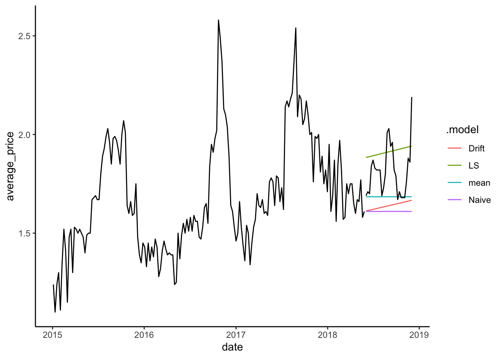
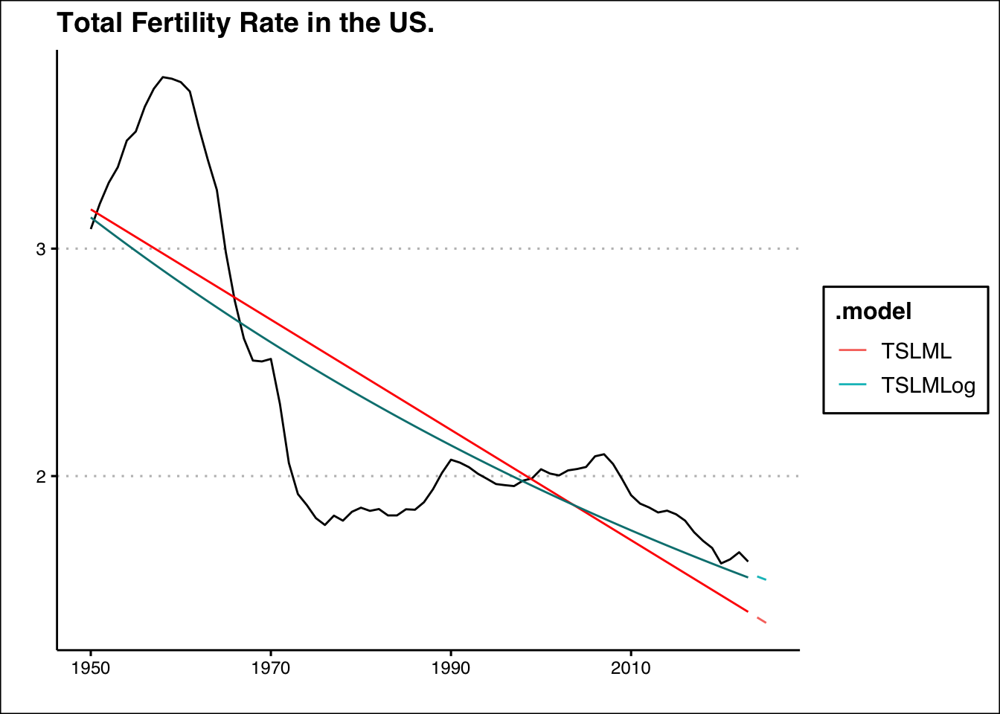

library(tidyverse)
library(fpp3)
cali<-read_csv("https://jagelves.github.io/Data/CaliforniaAvocado.csv")5 Model Benchmarks
This module will introduce the modeling procedure with four different benchmarks (Naive, Drift, Mean, and Least Squares). The fit of these benchmarks will be assessed using accuracy measures such as the Mean Error, Mean Absolute Error, Root Mean Squared Error, among others. In general, these accuracy measures compare the fitted values with observed values. A good model will account for most of the series’s systematic variation, leaving a small random error. Lastly, to avoid over-fitting the models, we will use a training set and test set along with cross validation.
5.1 Benchmarks
One of the most intuitive (but naive) predictions we can make about the future is to expect that the value of a variable will behave as it did in the past. A naive prediction sets the prediction of a future period to the value of the preceding period. For example, if you consider the task of predicting your weight, a simple heuristic would be to think that your weight tomorrow be the same as the weight observed today. Mathematically we would write:
where \(\hat y_{T+h}\) is the predicted value for \(h\) periods ahead, and \(y_T\) is the value observed at the current time period \(T\). We can adjust the Naive prediction by accounting for some natural drift (an increase or decrease). Thinking about weight once again, we note that as kids grow, we expect their weight to be close to the previous measurement but slightly higher as we need to account for growth. We would “drift” the naive prediction upward. Mathematically we would write:
where \(h(\frac{y_t-y_1}{T-1})\) can be thought as the average increase of \(y\) from period \(1\) to the current period \(T\). One could also predict weight by observing weight during a period and averaging the values. Every day the data recorded would be slightly different, but if diets, exercise, sleep, etc., remain relatively constant, the mean could be a good predictor of your future weight. Formally:
Lastly, we can use the weight data collected from a period and observe if there is any trend. If we find ourselves motivated to lose weight we can start recording our weight every day. Ideally, we will start seeing the effect of our diet, exercise and healthy sleep in the data. We can predict tomorrows weight by taking into account the downward trend of our weight. Formally:
5.2 Modeling the the Average Price of Avocados
Let’s apply these four models to forecast the average price of avocados in California. We’ll start by loading the tidyverse and fpp3 packages and importing the data.
Recall that we can create a tsibble from the csv file using the as_tsibble() function. The code below selects the variable of interest and the filter_index() function is used to focus our analysis for 2015-01-04~2018-06-02 with 2018-06-02 not being included.
cali %>%
select(date,average_price) %>%
as_tsibble(index=date) %>%
filter_index("2015-01-04"~"2018-06-02") -> calits_trainNow we can use the model() function to run the benchmarks discussed in Section 5.1. We have saved the models to an object called fit.
fit <- model(calits_train,mean=MEAN(average_price),
Naive=NAIVE(average_price),
Drift=RW(average_price~drift()),
LS=TSLM(average_price~trend()))The fit object is saved as a mable (model table). The model()function specifies the four models to be estimated using their respective functions (i.e., MEAN(), NAIVE(), RW(), and TSLM()). To explore the coefficients of the models estimated, we use the coef() function with fit as its single argument. The output table has been enhanced visually by using the gt package.
library(gt)
coef(fit) %>%
gt() %>%
cols_align("center") %>%
tab_header(title = md("**Model Coefficients For The Avocado Data**")) %>%
tab_style(
locations =cells_column_labels(columns = everything()),
style = list(cell_borders(sides = "bottom", weight = px(3)),
cell_text(weight = "bold"))) %>%
fmt_number(columns =c(statistic,estimate,std.error,p.value),
decimals = 4)| Model Coefficients For The Avocado Data | |||||
|---|---|---|---|---|---|
| .model | term | estimate | std.error | statistic | p.value |
| mean | mean | 1.6845 | 0.0212 | 79.3980 | 0.0000 |
| Drift | b | 0.0021 | 0.0104 | 0.2010 | 0.8410 |
| LS | (Intercept) | 1.4856 | 0.0391 | 38.0158 | 0.0000 |
| LS | trend() | 0.0022 | 0.0004 | 5.8702 | 0.0000 |
The table records the estimates and p-values for all the benchmarks discussed in Section 5.1. The Naive model has no entry, as the forecast is created by using the previous period’s observed value. Note as well that the Drift and LS models select a positive slope to account for the trend. Below we illustrate the fit of the Mean model by a dashed blue line, the Least Squares model by the red line and the Naive model by the orange line.
calits_train %>% autoplot(average_price) + theme_classic() +
geom_line(aes(y = .fitted), col="red",
data = augment(fit) %>% filter(`.model`=="LS")) +
geom_line(aes(y = .fitted), col="orange",
data = augment(fit) %>% filter(`.model`=="Naive")) +
geom_line(aes(y = .fitted), col="blue", linetype="dashed",
data = augment(fit) %>% filter(`.model`=="mean")) +
labs(y="", title= "California's Average Price Of Avocados",
subtitle = "Jan 4, 2015 - May 27, 2018",
x="")The graph illustrates how closely the Naive model follows the data. This might seem like a good model, but consider how the heuristic makes a mistake every period. Since average prices are constantly changing every week, predicting the previous value always results in an error. Critically, the Naive prediction does not explain the series governing process. The LS model, on the other hand, provides some insight into a force that is influencing the data—a rising trend. We can use characteristics such as a trend or seasonality to forecast a series effectively.
5.3 Model Fit
The model fit will be assessed by comparing the fitted values against observed values. In general, a good fit is determined by how far the fitted values are from the observed ones. If we square all of the distances between actual points and predicted values (i.e., errors) and then average them, we calculate the Mean Squared Error (MSE).
How we decide to aggregate our errors will determine our measure of accuracy. For example, if we follow the same procedure as the one for MSE’s but instead find the square root, we have calculated the RMSE. Below you will find a collection of accuracy measures.
| Measure | Explanation | Formula |
|---|---|---|
| Mean Error (ME) | Measures the average bias in forecasts. | \(ME = \frac{1}{n} \sum_{t=1}^{n} (y_t - \hat{y}_t)\) |
| Root Mean Square Error (RMSE) | Captures the square root of the average squared errors, emphasizing larger errors. | \(RMSE = \sqrt{\frac{1}{n} \sum_{t=1}^{n} (y_t - \hat{y}_t)^2}\) |
| Mean Absolute Error (MAE) | Reflects the average magnitude of errors without direction. | \(MAE = \frac{1}{n} \sum_{t=1}^{n} |y_t - \hat{y}_t|\) |
| Mean Percentage Error (MPE) | Shows the average forecast bias as a percentage. | \(MPE = \frac{1}{n} \sum_{t=1}^{n} \frac{y_t - \hat{y}_t}{y_t} \times 100\) |
| Mean Absolute Scaled Error (MASE) | Scales the MAE relative to the average MAE from a naïve forecast. | \(MASE = \frac{\text{MAE}}{\frac{1}{n-1} \sum_{t=2}^{n} |y_t - y_{t-1}|}\) |
| Root Mean Squared Scaled Error (RMSSE) | Similar to RMSE but scaled by the error of a naïve forecast. | \(RMSSE = \frac{RMSE}{\sqrt{\frac{1}{n-1} \sum_{t=2}^{n} (y_t - y_{t-1})^2}}\) |
| Autocorrelation at Lag 1 (ACF1) | Measures the correlation of residuals with their lagged values. | Calculated using the autocorrelation function for residuals at lag 1. |
You will notice that the Naive method provides the best results since all the accuracy metrics are the smallest. We highlighted these results and made the table more appealing using the gt library.
accuracy(fit) %>%
gt() %>%
cols_align("center") %>%
tab_header(title = md("**Model Fit**")) %>%
tab_style(locations = cells_column_labels(columns = everything()),
style = list(cell_borders(sides = "bottom", weight = px(3)),
cell_text(weight = "bold"))) %>%
fmt_number(columns =c(ME,RMSE,MAE,MPE,MAPE,MASE,RMSSE,ACF1),
decimals = 2) %>%
tab_style_body(
style = cell_fill(color="lightgreen"),
values = "Naive",
targets ="row")| Model Fit | |||||||||
|---|---|---|---|---|---|---|---|---|---|
| .model | .type | ME | RMSE | MAE | MPE | MAPE | MASE | RMSSE | ACF1 |
| mean | Training | 0.00 | 0.28 | 0.23 | −2.71 | 13.59 | 2.26 | 2.05 | 0.87 |
| Naive | Training | 0.00 | 0.14 | 0.10 | −0.19 | 6.04 | 1.00 | 1.00 | −0.21 |
| Drift | Training | 0.00 | 0.14 | 0.10 | −0.31 | 6.05 | 1.00 | 1.00 | −0.21 |
| LS | Training | 0.00 | 0.26 | 0.21 | −2.21 | 12.23 | 2.07 | 1.87 | 0.85 |
5.4 Forecast
The forecast of the series is obtained by using the forecast() function and specifying the number of periods (\(h\)) ahead to forecast. Below we forecast \(27\) weeks and save the result in an object called calits_fc.
calits_fc <- fit %>% forecast(h=27)The autoplot() and autolayer() functions are used below to create a graph with the forecasts and the training set. The argument level is set to NULL to omit the prediction intervals.
calits_fc %>% autoplot(level=NULL) + theme_classic() +
autolayer(calits_train, average_price) +
labs(y="", title= "California's Forecasted Average Price Of Avocados",
subtitle = "Jan 4, 2015 - Dec 2, 2018",
x="")Note how the Mean and Naive models predict that the series will continue without a trend. The LS and Drift models predicts that the series will continue its trend but, like all other methods, do not consider the seasonal pattern that is evident in the average price of avocados. In future chapters, we will look at models that account for both trend and seasonality.
5.5 Over-Fitting
Over-fitting can happen when a model is overly flexible. This can make the model fit to the random fluctuations or noise in the data, rather than the underlying pattern. This is a major failing in modeling as it ignores the systematic pattern that governs the time series.
To overcome this problem, we usually have a training set or subset of the data that we use to estimate the model’s parameters. Once the model is estimated, we assess its performance on a new subset of the data that was not used in estimating the model. This second subset of data is called the test set. A model that over-fits to the training data, will often perform poorly when forecasting the test set.
Recall that benchmarks were estimated for the period between 2015-01-04~2018-06-02. We will call this our training set. For our test set, we’ll use the 2018-06-02~2018-12-02 period. The code below creates a test set and a set that includes both the test set and training set using the filter_index() function.
cali %>%
as_tsibble(index=date) %>%
filter_index("2018-06-02"~"2018-12-02") -> calits_test
cali %>%
as_tsibble(index=date) %>%
filter_index(.~"2018-12-02") -> calitsNow we can plot the training set, the forecast, and the test set by using the code below.
calits_fc %>% autoplot(level=NULL) +
theme_classic() +
autolayer(calits_train, average_price) +
autolayer(calits_test, average_price)
The graph shows how the LS method does well with the test data and a long forecast period. This can be confirmed by obtaining the accuracy measures against the test set. The code below uses the accuracy() function to generate the main table.
accuracy(calits_fc, calits_test) %>% select(-ACF1, RMSSE, MASE)| Model Fit | ||||||
|---|---|---|---|---|---|---|
| .model | .type | ME | RMSE | MAE | MPE | MAPE |
| Drift | Test | 0.17 | 0.21 | 0.17 | 9.24 | 9.24 |
| LS | Test | −0.10 | 0.16 | 0.14 | −5.88 | 7.78 |
| Naive | Test | 0.20 | 0.24 | 0.20 | 10.85 | 10.85 |
| mean | Test | 0.13 | 0.18 | 0.13 | 6.72 | 6.85 |
Interestingly, the Naive method is no longer the best model since it will always predict the series’ previous value regardless of how many periods we forecast. On the other hand, the LS model correctly uses the deterministic trend to forecast the future. Trends are useful in predicting time series.
5.6 Cross Validation
Instead of selecting a single training set and test set, we can create several. Specifically, we could take the first three observations of our time series and define them as the training set. We can then estimate a model and forecast the fourth (or nth) observation. The forecast error is recorded and the training set is changed so that now the first four observations are used to estimate the model and forecast the fifth (or nth) observation. This procedure is repeated as many times as the data allows. Below we create a table that enables us to follow the cross-validation of our benchmarks.
avocado_cv <- calits_train %>%
stretch_tsibble(.init = 3, .step = 1)stretch_tsibble() is a handy function that creates a variable called id that is initialized with the .init argument. In this case, the first three observations are given \(id=1\). The id then changes with a step of \(.step=1\). That is, \(id=2\) for the first four observations, then \(id=3\) for the first five observations, and so on. Below is a sample of the tsibble.
| CV tsibble | ||
|---|---|---|
| date | average_price | .id |
| 2015-01-04 | 1.24 | 1 |
| 2015-01-11 | 1.10 | 1 |
| 2015-01-18 | 1.24 | 1 |
| 2015-01-04 | 1.24 | 2 |
| 2015-01-11 | 1.10 | 2 |
| 2015-01-18 | 1.24 | 2 |
| 2015-01-25 | 1.30 | 2 |
| 2015-01-04 | 1.24 | 3 |
Using this new tsibble, the benchmarks are estimated for each id and forecasts are generated for one period ahead (\(h=1\)). The accuracy is measured and averaged across all iterations for each model. Results are shown in the table below.
avocado_cv %>%
model(Mean=MEAN(average_price),
Naive=RW(average_price),
Drift=RW(average_price ~ drift()),
LS=TSLM(average_price~date)) %>%
forecast(h = 1) %>% accuracy(calits) %>%
gt() %>%
cols_align("center") %>%
tab_header(title = md("**Model Fit Cross Validation**")) %>%
tab_style(locations = cells_column_labels(columns = everything()),
style = list(cell_borders(sides = "bottom", weight = px(3)),
cell_text(weight = "bold"))) %>%
fmt_number(columns =c(ME,RMSE,MAE,MPE,MAPE,MASE,RMSSE,ACF1),
decimals = 2) %>%
tab_style_body(
style = cell_fill(color="lightgreen"),
values = "Naive",
targets ="row")| Model Fit Cross Validation | |||||||||
|---|---|---|---|---|---|---|---|---|---|
| .model | .type | ME | RMSE | MAE | MPE | MAPE | MASE | RMSSE | ACF1 |
| Drift | Test | 0.00 | 0.14 | 0.10 | −0.58 | 6.09 | 1.01 | 1.01 | −0.21 |
| LS | Test | −0.05 | 0.27 | 0.21 | −4.64 | 12.35 | 2.05 | 1.94 | 0.85 |
| Mean | Test | 0.12 | 0.29 | 0.21 | 5.36 | 11.73 | 2.12 | 2.07 | 0.85 |
| Naive | Test | 0.00 | 0.14 | 0.10 | −0.15 | 5.96 | 0.99 | 1.00 | −0.21 |
The Naive method performs the best when forecasting one period ahead. However, we note once again that the Naive method will provide the same forecast for one, two, three or more periods ahead. You can confirm that this model would lose its appeal when predicting several periods ahead. Most importantly, there is no formal model telling us how data is generated.
5.7 Other Accuracy Measures
AIC (Akaike Information Criterion), AICc (corrected AIC), and BIC (Bayesian Information Criterion) are commonly used measures of model accuracy or goodness of fit in statistical modeling. They are used to compare different models and select the one that best balances model complexity (number of parameters estimated) and fit.
- AIC is a measure that penalizes model complexity. It balances the trade-off between model fit and the number of parameters in the model. The AIC value is calculated using the formula:
where \(T\) is the number of observations, \(SSE\) the sum squared errors, and \(k\) is the number of predictors (i.e., complexity of the model). The lower the AIC value, the better the model.
- AICc is an adjustment to the AIC measure, particularly for smaller sample sizes. AIC tends to overestimate the complexity penalty when the number of data points is relatively small. AICc adds a correction factor to account for this and is calculated using the formula:
AICc provides a more accurate measure of model fit in situations where the sample size is small. Note that as \(T\) gets large, the correction factor approximates zero. As with the AIC, a lower AICc value indicates better fit.
- BIC, also known as Schwarz Information Criterion (SIC), is another measure that penalizes model complexity. BIC is based on Bayesian principles and provides a stronger penalty for model complexity compared to AIC. The BIC value is calculated using the formula:
BIC puts a greater emphasis on simplicity compared to AIC or AICc.
These measures can be easily calculated in R using the glance() function. The code below estimates the ETS and ARIMA models (which we will learn in the upcoming modules) for illustration purposes since the Naive and Mean models are non-parametric and do not provide us with an AIC, AICc, or BIC.
calits_train %>%
model(LS=TSLM(average_price~trend()),
ETS=ETS(average_price),
ARIMA=ARIMA(average_price))%>%
glance() %>%
select('.model',"AIC","AICc","BIC")| Model Fit Information Criterion | |||
|---|---|---|---|
| .model | AIC | AICc | BIC |
| LS | −476.14 | −476.01 | −466.60 |
| ETS | 203.26 | 203.39 | 212.80 |
| ARIMA | −205.83 | −205.76 | −199.48 |
The model with the lowest AIC (AICc or BIC) is the simple Least Squares model that only has two parameters to estimate (slope and intercept). These results indicate that LS provides a good fit relative to it’s complexity.
5.8 Readings
The primary reading for this chapter comes from Hyndman (2021). Topics include the forecasting process, accuracy measures, and time series analysis using simple regression. For a basic introduction to regression and time series with Excel, the Winston and Albright (2019) reading is recommended.
Hyndman (2021) Chapter 5 (The Forecaster’s Toolbox), Chapter 7 (Time Series Regression Models).
Winston and Albright (2019) Chapter 13.1 (Introduction), 13.2 (Overview of Regression Models), 13.3 (Simple Regression Models).
gt package: https://gt.rstudio.com
5.9 Leasons Learned
In this module you have been introduced to the general procedure in forecasting time series. Particularly you have learned to:
Create forecasts with simple heuristics.
Assess the fit of the model with accuracy measures.
Create a test set and train set to avoid over-fitting.
Perform cross validation.
Select models with the AIC, AICc or BIC.
5.10 Exercises
- You’ve been tasked by the Japanese government with an important mission: forecast the country’s population by 2030. Your projections will help them effectively allocate resources and plan for future demands. To accomplish this, you’ll rely on population data available at the following link: https://jagelves.github.io/Data/UNPOP.csv Build two models using the TSLM approach. One with a simple linear trend and another with a quadratic trend (use
I(trend()^2)in R to incorporate a quadratic term). Compare the models by calculating their BIC (Bayesian Information Criterion), which will help you identify which model is more accurate. Provide your population estimate for 2030 using the model with the lower BIC. Based on your findings, determine whether Japan’s population is expected to increase or decrease by 2030.
Suggested Answer
Here is code to obtain the AIC, AICc and BIC:
rm(list=ls())
library(tidyverse)
library(fpp3)
data<-read_csv("https://jagelves.github.io/Data/UNPOP.csv")Rows: 21983 Columns: 65
── Column specification ────────────────────────────────────────────────────────
Delimiter: ","
chr (7): Variant, Area, Notes, ISO3, ISO2, Type, Population_Annual_Doubling...
dbl (58): Index, Location_code, SDMX_code, Parent code, Year, Total_Populati...
ℹ Use `spec()` to retrieve the full column specification for this data.
ℹ Specify the column types or set `show_col_types = FALSE` to quiet this message.data %>% filter(ISO3=="JPN") %>%
select(Year, Total_Population,ISO3) %>%
as_tsibble(index=Year,key=ISO3) -> JAP_ts
JAP_ts %>% model(TSLML=TSLM(Total_Population~trend()),
TSLMQ=TSLM(Total_Population~trend()+I(trend()^2))) -> fit
fit %>% glance() %>%
select('.model',"AIC","AICc","BIC")# A tibble: 2 × 4
.model AIC AICc BIC
<chr> <dbl> <dbl> <dbl>
1 TSLML 1270. 1271. 1277.
2 TSLMQ 1048. 1048. 1057.For the forecast we can use the forecast() function:
fit %>% forecast(h=7) %>% filter(.model=="TSLMQ")# A fable: 7 x 5 [1Y]
# Key: ISO3, .model [1]
ISO3 .model Year Total_Population .mean
<chr> <chr> <dbl> <dist> <dbl>
1 JPN TSLMQ 2024 N(125404, 1484405) 125404.
2 JPN TSLMQ 2025 N(125043, 1503406) 125043.
3 JPN TSLMQ 2026 N(124657, 1524189) 124657.
4 JPN TSLMQ 2027 N(124247, 1546855) 124247.
5 JPN TSLMQ 2028 N(123812, 1571507) 123812.
6 JPN TSLMQ 2029 N(123353, 1598249) 123353.
7 JPN TSLMQ 2030 N(122869, 1627190) 122869.The population is expected to go down to 122,868 people. This represents a decrease of 1.21%.
- Fertility rates are crucial because they directly impact population growth and demographic structure. Low fertility rates can lead to an aging population, shrinking workforce, and challenges in sustaining economic growth and social welfare programs. To maintain a stable population in the U.S., the total fertility rate (TFR) needs to be around 2.1 children per woman (i.e. the replacement rate) If the TFR falls below this level for an extended period, the population may decline without immigration. Use the data found here: https://jagelves.github.io/Data/UNPOP.csv to plot the fertility rate for the US from 1960-2023 and the current replacement rate. What is the two year projected fertility rate when using a simple linear trend? How does this change when running the same model with a log transformation on the fertility variable?
Suggested Answer
To graph the fertility rate we can use the following code:
rm(list=ls())
library(tidyverse)
library(fpp3)
library(ggthemes)
data<-read_csv("https://jagelves.github.io/Data/UNPOP.csv")
data %>% filter(ISO3=="USA") %>%
select(Year, Total_Fertility_Rate,ISO3) %>%
as_tsibble(index=Year,key=ISO3) -> USFert
USFert %>%
autoplot(.vars=Total_Fertility_Rate) + theme_clean() +
geom_hline(yintercept = 2.1, lty=2) +
labs(title="Total Fertility Rate in the US.",
x="", y="")The two year projections are retrieved with the following code:
USFert %>% model(TSLML=TSLM(Total_Fertility_Rate~trend()),
TSLMLog=TSLM(log(Total_Fertility_Rate)~trend())) -> fit
fit %>% forecast(h=2) # A fable: 4 x 5 [1Y]
# Key: ISO3, .model [2]
ISO3 .model Year Total_Fertility_Rate .mean
<chr> <chr> <dbl> <dist> <dbl>
1 USA TSLML 2024 N(1.4, 0.18) 1.38
2 USA TSLML 2025 N(1.4, 0.18) 1.35
3 USA TSLMLog 2024 t(N(0.43, 0.025)) 1.56
4 USA TSLMLog 2025 t(N(0.42, 0.025)) 1.54If the linear trend is assumed to continue, in two years the projected fertility rate will go down to 1.35. However, if we perform the log transformation, the total fertility rate is expected to fall at a slower rate and reach 1.54 in two years. Below is a graph of the models and projections:
fit %>% forecast(h=2) %>% autoplot(level=NULL) +
autolayer(USFert,Total_Fertility_Rate) + theme_clean() +
autolayer(fit %>% augment() %>% filter(.model=="TSLML"),.fitted, col="red") +
autolayer(fit %>% augment() %>% filter(.model=="TSLMLog"),.fitted, col="#008080") +
labs(title="Total Fertility Rate in the US.",
x="", y="")
- Refer back to Problem 2, where your task is to forecast the fertility rate. For both the linear and logarithmic models you’ve developed, calculate the RMSE (Root Mean Squared Error) using the models’ fitted values. Use the
augment()function to extract the residuals for each model, then square these residuals, average them and finally take the square root. Based on the RMSE, determine which model provides a better fit for the data.
Suggested Answer
To obtain the residuals and perform the calculation you can use the code below. First obtain the RMSE for the Linear model:
fit %>% augment() %>% filter(.model=="TSLML") %>%
pull(.resid) %>% `^`(2) %>% mean() %>% sqrt()[1] 0.4055513Then we can apply the same code for the Logarithmic model:
fit %>% augment() %>% filter(.model=="TSLMLog") %>%
pull(.resid) %>% `^`(2) %>% mean() %>% sqrt()[1] 0.3850176If we follow the RMSE, the logarithmic model fits the data better.
- Refer back to Problem 2, where your task is to forecast the fertility rate. For both the linear and logarithmic models you’ve developed, perform leave-one-out cross-validation. Initialize the cross-validation with eight observations and use a step of one. Which model performs better according to the RMSE?
Suggested Answer
To perform leave-one-out cross validation, we initialize the process with eight observations and set the step size to one. The cross validation forecasts one period ahead. The code below performs the cross validation:
USFert %>%
stretch_tsibble(.init = 8, .step = 1) %>%
model(TSLML=TSLM(Total_Fertility_Rate~trend()),
TSLMLog=TSLM(log(Total_Fertility_Rate)~trend())) %>% forecast(h=1) %>% accuracy(USFert) %>%
select(.model,RMSE)# A tibble: 2 × 2
.model RMSE
<chr> <dbl>
1 TSLML 0.457
2 TSLMLog 0.359Following the RMSE, the TSLMLog model performs the best.
- Grocers Inc. purchases avocados at Richmond/Norfolk’s market price and sells them in their stores for $1.5 each. Using the avocado price data found here: https://jagelves.github.io/Data/avocado2020-2023.csv, forecast margin for the company over the next 4 weeks using a simple mean, the NAIVE and simple trend. Use only data from W2 2023 onward.
Suggested Answer
We can start by doing some data wrangling. Load the data, select variables, get the appropriate dates and create the tsibble:
rm(list=ls())
library(tidyverse)
library(fpp3)
avo<-read_csv("https://jagelves.github.io/Data/avocado2020-2023.csv")
avo %>% select(Geography,Date, Type, AveragePrice) %>%
filter(Geography=="Richmond/Norfolk") %>%
filter(Type=="Conventional") %>%
mutate(Date=mdy(Date)) %>%
mutate(Date=yearweek(Date)) %>%
select(Date,AveragePrice) %>%
distinct(Date, .keep_all = TRUE) %>%
arrange(Date) %>%
as_tsibble(index=Date) %>%
filter_index("2023 W2"~.) -> avo_tsWe can now build our models and forecast the price. Below we also report the margin calculation:
avo_ts %>% model(MEAN=MEAN(AveragePrice),
NAIVE=NAIVE(AveragePrice),
TSLM=TSLM(AveragePrice~trend())) -> fit
fit %>% forecast(h=4) %>%
as_tibble() %>%
select(Date,.model,.mean) %>%
mutate(Margin=(1.5-.mean)/1.5)# A tibble: 12 × 4
Date .model .mean Margin
<week> <chr> <dbl> <dbl>
1 2023 W25 MEAN 1.03 0.312
2 2023 W26 MEAN 1.03 0.312
3 2023 W27 MEAN 1.03 0.312
4 2023 W28 MEAN 1.03 0.312
5 2023 W25 NAIVE 1.13 0.247
6 2023 W26 NAIVE 1.13 0.247
7 2023 W27 NAIVE 1.13 0.247
8 2023 W28 NAIVE 1.13 0.247
9 2023 W25 TSLM 1.09 0.272
10 2023 W26 TSLM 1.10 0.268
11 2023 W27 TSLM 1.10 0.265
12 2023 W28 TSLM 1.11 0.262